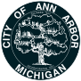
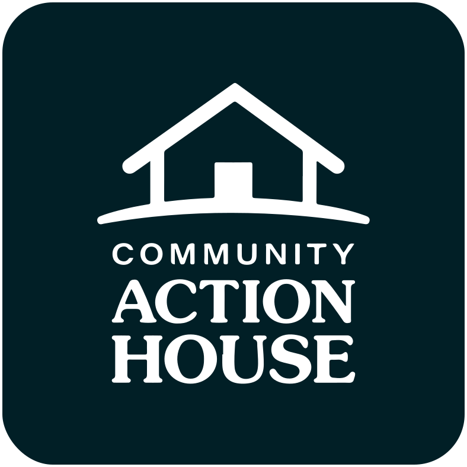
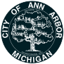
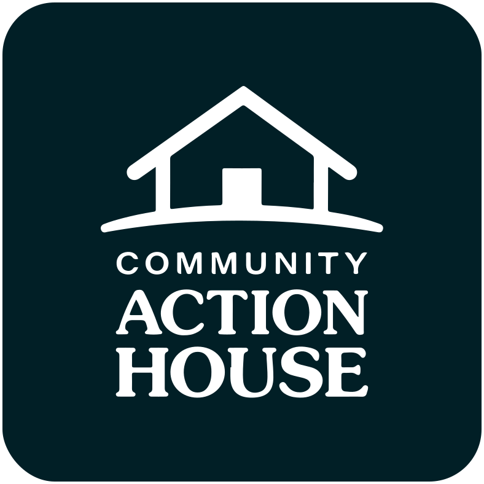

About
Hi, I'm Ben!
I'm a User Experience Researcher/Designer who is passionate about making technology more accessible and easier to use, for the widest range of users, and using technology to connect people with other people. I'm a Master's degree student in UX Research and Design at the University of Michigan's School of Information. User-centered product design connects my curiosity about human behavior, my interest in improving well-being, and my passion for innovating new technologies and products.
Inspiration
I work at University of Michigan's Information and Technology Services (ITS), where I am the initial point of assistance for members of the university community - young and old, technically savvy and inexperienced, open to learning and intimidated by technology, native and non-native English speakers, neurotypical and neurodiverse - who need help with all manner of technology challenges. The range of challenges is huge, giving me a unique view of user experience which motivates me every day to want to make technology easier and more accessible to individuals.
Education
University of Michigan | Master of Science in Information
Specialization in UX Research and Design
Graduating | May 2023
University of Michigan | Bachelor of Arts in Psychology
Minor in Entreprenurship
Graduated | 2020
Organizations I've Worked With

 


